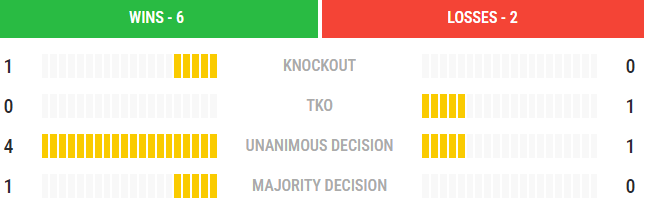
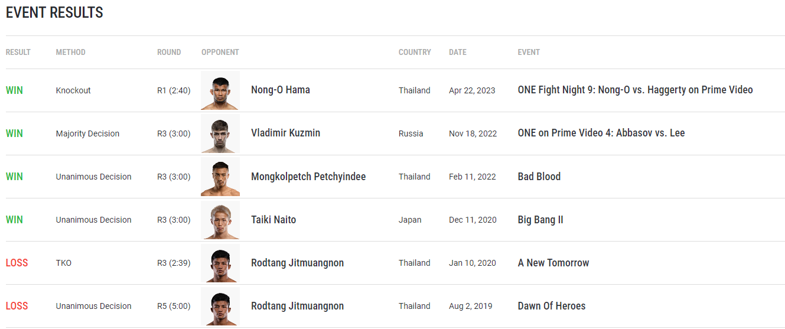

Jonathan haggerty
Info
- weitght limit: 65,1 KG
- Height: 170 cm
- Counrty: United kingdom
- Age:26 y
About Jonathan Haggerty
Jonathan Haggerty is an incredibly accomplished martial artist, despite his relative youth. He began training in Muay Thai at the age of 7 under the watchful eye of his father, who was himself an active competitor, and had his first bout just one year later. Since then, he has relentlessly pursued his dreams of becoming the best striker in the world.
Haggerty quickly racked up multiple amateur accolades in the sport of Muay Thai, becoming a multiple-time English and British Champion before claiming a European title as well. After turning professional, he continued dominating his way across the globe, knocking out almost every opponent to date on the way to becoming a Roar Combat League Champion.
This tremendous success soon led Haggerty to ONE Championship, where he made a stellar debut by defeating Muay Thai World Champion Joseph Lasiri. One of the very best strikers to ever represent the United Kingdom, Haggerty then made waves around the planet in just his second bout on the global stage. He defeated legendary Muay Thai World Champion Sam-A Gaiyanghadao in May 2019, capturing the ONE Flyweight Muay Thai World Title in the process to reach the pinnacle of his career.
